Deployment Overview
Zabbix is software that monitors IT infrastructure and the health and integrity of networks, servers, virtual machines, applications, services, databases, websites, the cloud, and more.
This document describes how to use Zabbix to remotely monitor a WatchGuard Firebox.
Integration Summary
The hardware and software used in this guide include:
- WatchGuard Firebox
- Fireware v12.8.2
- Zabbix
- Version 6.2.1
Test Topology
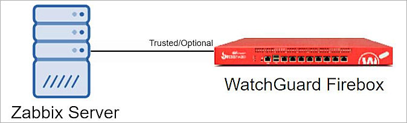
Configure Your Firebox
You must use Fireware Web UI to configure the SNMP settings on the WatchGuard Firebox before you use the Advanced Monitoring Agent to discover the Firebox. The URL to connect to Fireware Web UI in your web browser is https://<Firebox IP address>:8080.
Enable SNMP on the Firebox
To enable SNMP on the Firebox:
- Open Fireware Web UI and log in to the Firebox.
- Select System > SNMP.
The SNMP Settings page opens.
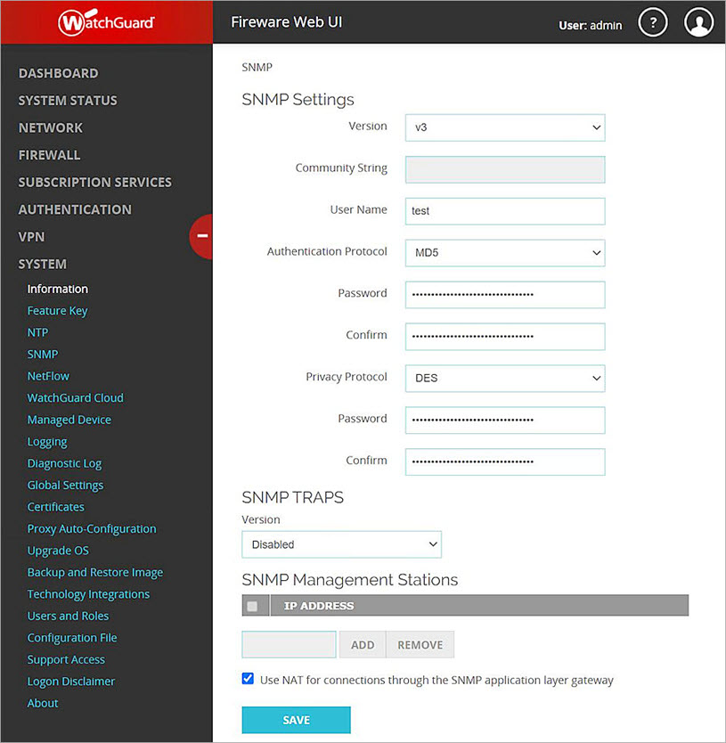
- From the Version drop-down list, select v3.
- In the User Name text box, type your user name.
- From the Authentication Protocol drop-down list, select MD5 or SHA1. In our example, we use MD5.
- In the Password and Confirm text boxes, type the authentication password.
- From the Privacy Protocol drop-down list, select DES.
- In the Password and Confirm text boxes, type the privacy password.
- Keep other settings as the default values.
Add an SNMP Policy
To enable the Firebox to receive SNMP polls from the Windows server, you must add an SNMP packet filter policy.
To add an SNMP policy:
- Select Firewall > Firewall Policies.
- Click Add Policy.
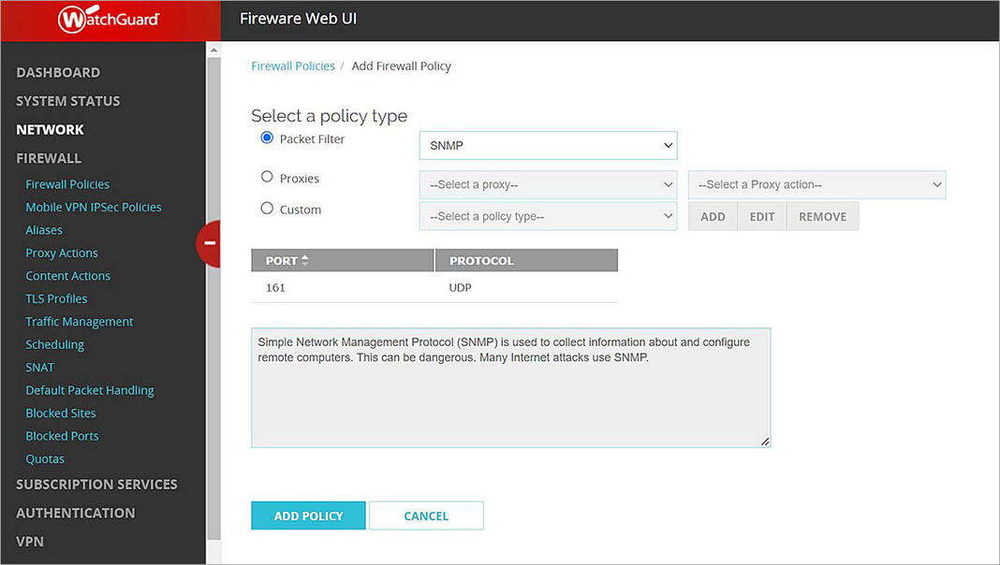
- From the Packet Filter drop-down list, select SNMP.
- Click Add Policy.
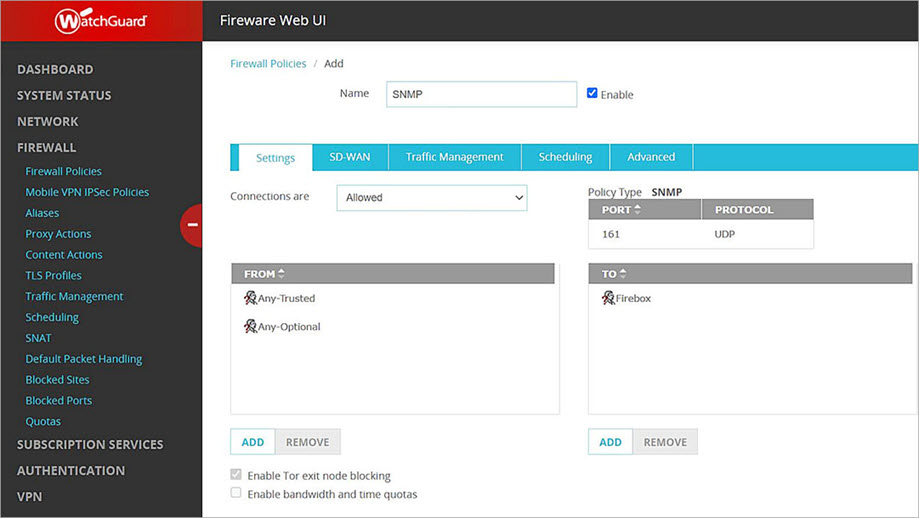
- In the From section, select Any-Trusted or Any-Optional, depending on which port is connected to Zabbix.
- In the To section, select Firebox.
- Click Save.
Zabbix Configuration
Log in to the Zabbix Web UI.
Create a Host
To create a host:
- Select Configuration > Hosts.
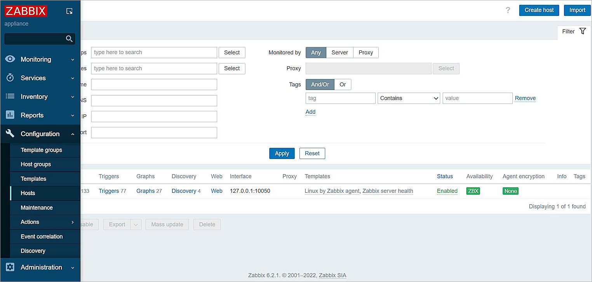
- Click Create Host.
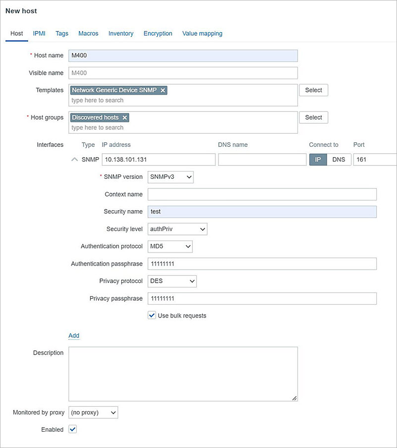
- In the Host Name text box, type your host name.
- In the Templates text box, select Network Generic Device SNMP. There is no official WatchGuard template.
- In the Host Groups text box, select Discovered Hosts.
- Below Interfaces, click Add. Select SNMP.
- In the IP Address text box, type the IP address of the Firebox interface which is connected to Zabbix.
- From the SNMP Version drop-down list, select SNMPv3.
- In the Security Name text box, type the user name you specified in the Enable SNMP on the Firebox section.
- From the Security Level drop-down list, select authPriv.
- From the Authentication Protocol drop-down list, select MD5.
- In the Authentication Passphrase text box, type the authentication password you specified in the SNMP settings on the Firebox.
- From the Privacy Protocol drop-down list, select DES.
- In the Privacy Passphrase text box, type the privacy password you specified in the SNMP settings on the Firebox.
- Click Add.
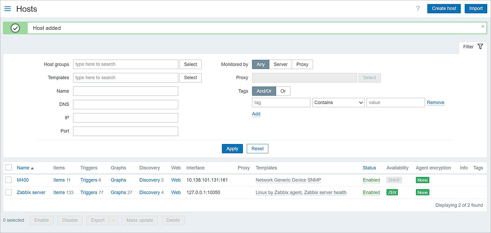
Create an Item
The Network Generic Device SNMP template might not include all of the required information. You can add a custom item to get the Firebox version.
To create an item:
- Click M400 Items.
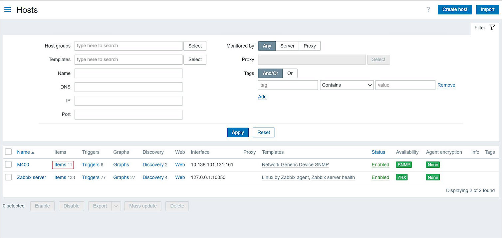
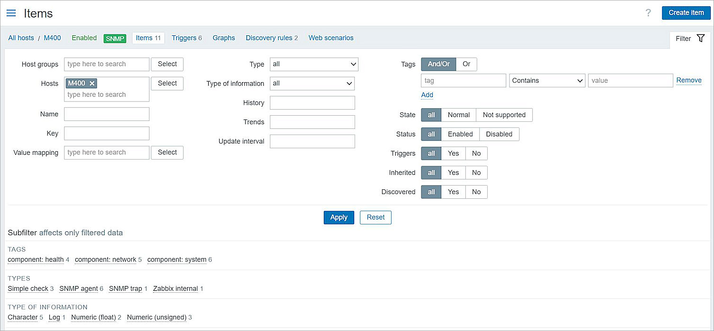
- Click Create Item.
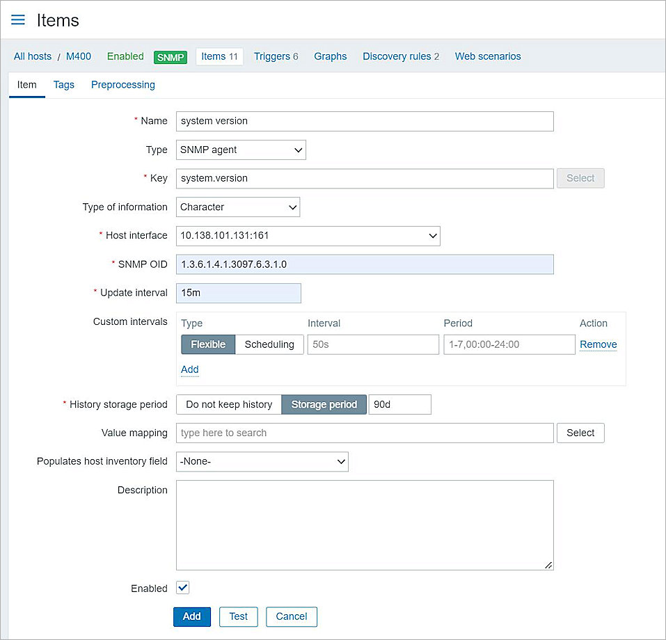
- In the Name text box, type the item name.
- From the Type drop-down list, select SNMP Agent.
- In the Key text box, type the key.
- From the Type of Information drop-down list, select Character.
The host IP address shows in the Host Interface drop-down list. - In the SNMP OID text box, type the WatchGuard firmware version OID 1.3.6.1.4.1.3097.6.3.1.0.
- In the Update Interval text box, type 15m.
- Keep other settings as the default values.
- Click Add.
Test the Integration
To test the integration:
- Wait for Zabbix to get the latest OID values, or to get the values manually, in Items, click Execute Now.
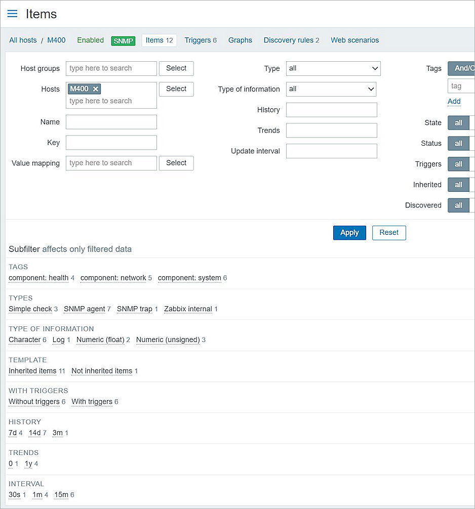
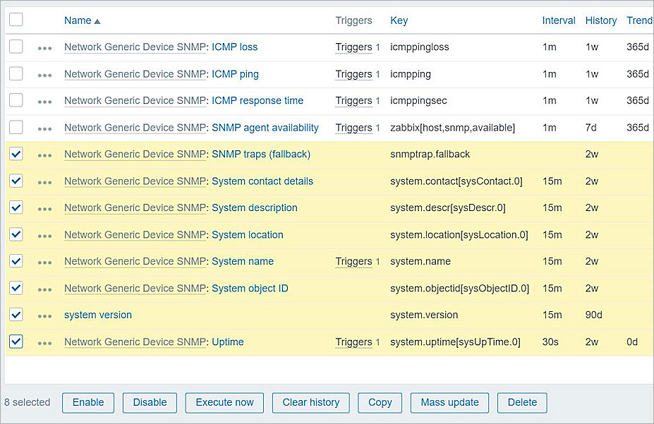
- Select Monitoring > Hosts > M400.
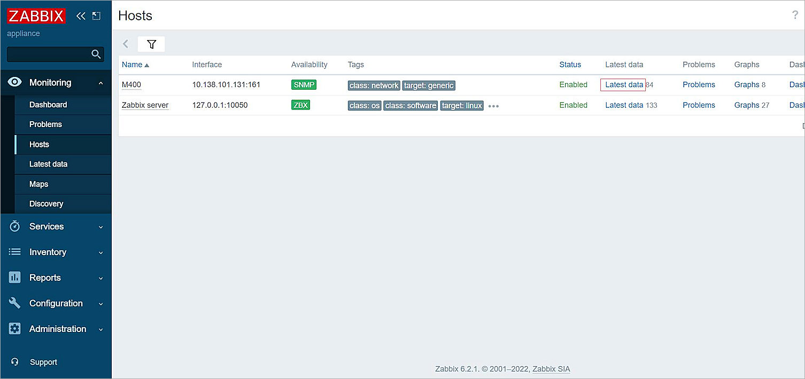
- Click Latest Data.
The OID values show.
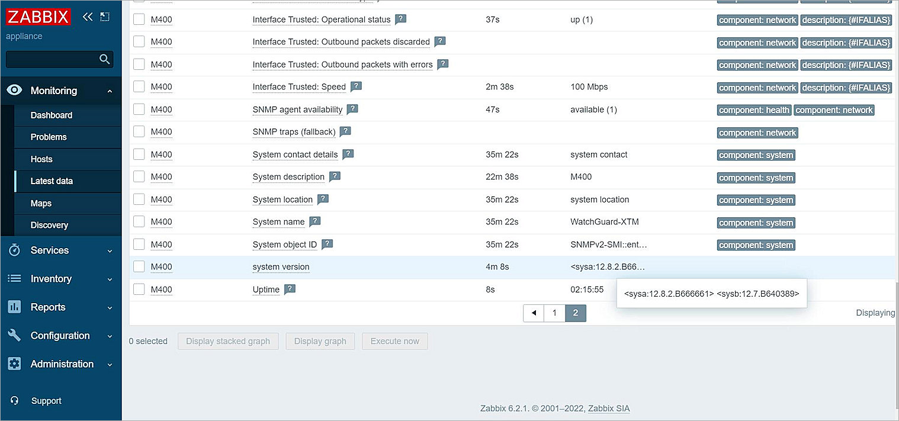